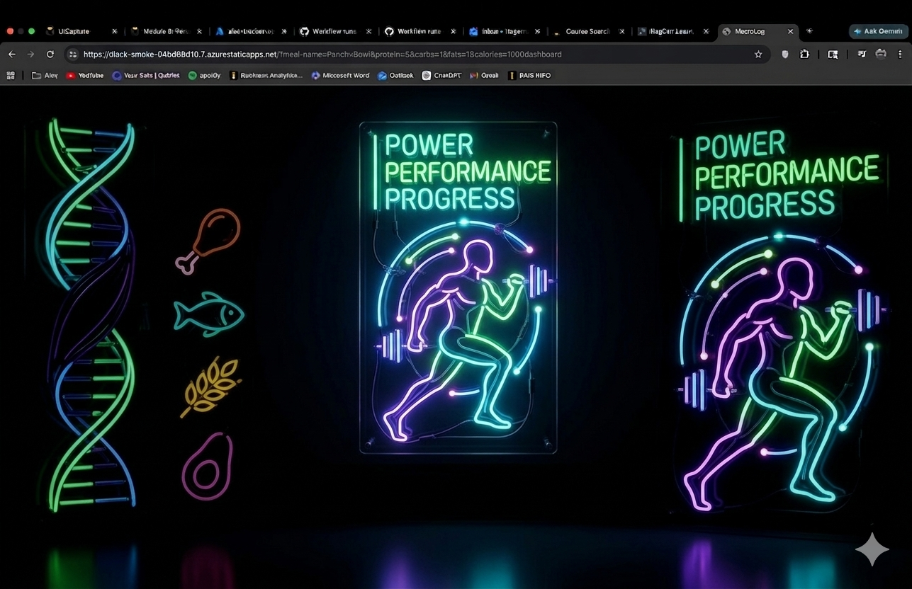
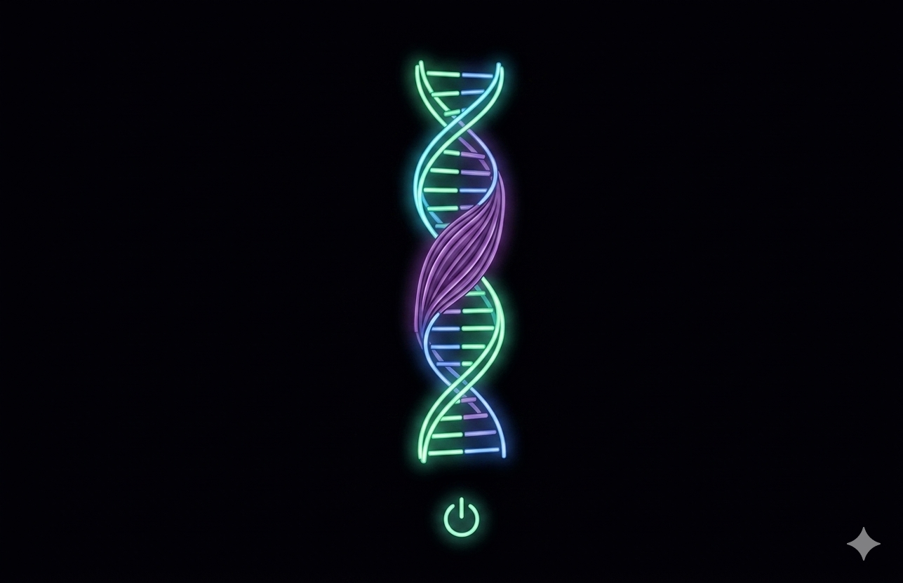

Fitness • Precision • Performance
MacroLog turns complex nutritional data into a streamlined, actionable dashboard. Effortlessly log your meals and visualize your daily progress to stay locked in on your physique targets.
Start Tracking →
Every macro matters. MacroLog is built on the understanding that precise, consistent data entry is the foundation of real, lasting body composition change.

Watch your neon progress rings fill in real time as you log each meal. Instant visual feedback keeps you accountable and on target — every single day.
Open the tracker and start logging your first meal.
Launch MacroLog →